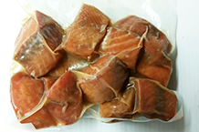
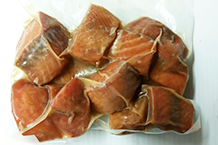

All of our products are 100% wild and harvested from the pristine coastal waters of British Columbia. We provide sustainable seafood that is flash frozen at sea ensuring premium quality products. Our products are Ocean Wise® approved which means they are recommended by the Vancouver Aquarium as an ocean friendly seafood choice.

Wild Pacific salmon
There are few species of wild Pacific salmon – chinook, sockeye, coho, keta and pink – vary in size, colour, texture, and fat content but all share a superb taste, high protein content, and low saturated fat and high polyunsaturated omega-3 fatty acid content from their diet of the rich ocean nutrients of the North Pacific.
Wild Chinook Salmon. Also called spring is the largest salmon with an average weight of 30 pound but some can weigh in at over 100 pounds. It is known for its rich flavour, firm texture and flesh colour that can range from ivory to deep red. Chinook has the highest total fat content of all species of salmon (10.4 grams per 100 grams) and Omega-3 fatty acids (2.5grams per 100 grams).
Wild Sockeye Salmon. Weigh from 4 to 10 pounds and have the most intense red coloured flesh, due to their diet of krill and shrimp which are high in natural carotenoid pigments. It has a firm texture and incredibly rich flavour. Sockeye rates second in total fat content with (8.6 grams per 100 grams) and third highest in Omega- 3 fatty acids (1.4 grams per 100 grams).
Wild Pink Salmon. Also known as Humpback is the smallest in the salmon family weighing in at 3 to 5 pounds. Its flesh is light pink and has a soft texture with a mild flavour. Total fat content (6.7 per 100 grams) and surprisingly it has the second highest amount of Omega-3 fatty acids (1.7 grams per 100 grams).
Wild Keta Salmon. Generally weighs 6 to 15 pounds, has a firm texture and a milder flavour than other species of salmon. The flesh colour can range from light pink to medium red. It has the lowest total fat content (3.7 grams per 100 grams) with the lowest Omega 3 fatty acids (1.0 grams per 100 grams).
Wild Coho Salmon. Weigh 7 to 8 pounds with a rich, reddish-orange flesh colour. Although it costs less than Spring or Sockeye salmon it's quality is still quite high. total fat (5.93 per 100 grams) with omega 3 fatty acid (1.0 grams per 100 grams).


 



Wild Albacore Tuna
Wild Albacore Tuna is noted for its white, firm meat and delicate flavour. They are 3-4 year old fish harvested by hook and line. Tuna can be seared, barbecued, baked, steamed and fried, as well as cured in citrus juice or rolled au naturel in a favourite sushi recipe. Before cooking, tuna should be thoroughly thawed. With a mild taste and a lovely colour that turns from rosy pink to ivory white when cooked.
Nutritionally, British Columbia Albacore Tuna is 100% wild food, high in protein, low in carbohydrates and very high in Omega-3 fatty acids (2.1 grams per 100 grams) and high in total fat (7.2 grams per 100 grams) as well as rich in minerals. They are also packed full of selenium, a heavy-hitting mineral antioxidant that is lacking in most North American diets due to its depletion in the soil by modern agricultural techniques.
- Wild Albacore Tuna has been listed as a "Best Choice" seafood product on Canada's Seafood Guide, www.seachoice.org
- The David Suzuki Foundation has approved Wild Albacore Tuna fishery as being sustainable
- In 2006, Wild Albacore Tuna was accepted by the Ocean Wise® Program of the Vancouver Aquarium
- The Monterey Bay Aquarium also approves troll-caught Albacore tuna as being environmentally friendly on their "Best Choice for a Healthy Ocean" list


Wild Lingcod
Wild Lingcod is a good source of protein, low in saturated fat with a moist sweet flesh. It is unique to the West coast of North America with an abundance off the Coast of British Columbia. A mature lingcod can reach up to 5 feet long and has a distinct large mouth and numerous sharp teeth.
Lingcod vary in color from grey-brown to green and bluish, with darker spotting and mottling on upper parts. The preferred habitat for lingcod varies depending on age and gender of the fish. Larvae are pelagic both nearshore and offshore. When 8-10 cm long (3 months), juveniles begin to settle in sand, gravel and eelgrass in bays, estuaries and shallow soft bottoms, then at ages one to two years, move to rocky bottom areas. Adults are often found on rocky bottom substrate from the intertidal zone to more than 300 m depth on the continental shelf, but typically prefer 0 to 70 m depth.
Its mild flesh is moist and is often preferred over halibut (total fat 0.6 grams per 100 grams). All sources of lingcod from British Columbia are ranked as “Best Choice”.

Pacific Halibut
Pacific halibut is prized for the delicate flavor and firm texture of its sparkling white, almost translucent flesh. The lean white meat of the Pacific halibut is high in protein and low in sodium, fat and calories, and with a minimum of bones, halibut as whole fish, fillets or portions adapts well to baking, broiling, frying, poaching or barbecuing.
Pacific halibut is one of the largest flatfish – they can weigh up to about 500 pounds and grow to over 8 feet long. Males tend to be smaller than females. Halibut are demersal, living on or near the bottom of the water and prefer water temperatures ranging from 3 to 8 degrees Celsius (37.4 to 46.4 degrees Fahrenheit).
Halibut are strong swimmers and are able to migrate long distances. Halibut of all ages and sizes are involved in a predominantly clockwise (northwest to southeast) migration from their settlement areas, reproductive fish also make regular seasonal migrations from more shallow feeding grounds in summer to deeper spawning grounds in winter.

Wild Sablefish
Wild Canadian sablefish has a rich sweet flavour with large sleek white flakes. Its unique taste and texture have made it a favourite among the world’s top chefs who value its high oil content and creative versatility. Smoked fish connoisseurs will love smoked sablefish’s deep nutty flavour, which has become widely sought after in major culinary centres around the globe. And wild Canadian sablefish is not only delicious, it is a naturally healthy choice this is high in protein and Omega-3 fatty acids and low in carbohydrates.
Sablefish has been harvested in the deep waters off the west coast of British Columbia, Canada for more than 40 years. Wild Canadian sablefish receives its unique taste and texture from the high oil content which makes it ideal for grilling, roasting, broiling, pan searing and poaching.
Smoked Products
All of our smoked products are hand pack, hand filleted and smoked locally. There are few species of wild Pacific salmon – chinook, sockeye, keta and pink – vary in size, colour, texture, and fat content but all share a superb taste, high protein content, and low saturated fat and high polyunsaturated omega-3 fatty acid content from their diet of the rich ocean nutrients of the North Pacific.
Maple Nuggets - 200g. Made from Haida Gwaii spring Salmon
Peppered Spring sticks - 200g.
No sugar added
Natural smoked Spring sticks - 200g. No sugar added

Natural smoked Sockeye sticks - 200g. No sugar added
Candied Sockeye Salmon - 200g

Cold smoked Sockeye Lox.
70g boards and 150g boards
Canned Products
All of our cans are hand pack, hand filleted and canned locally. Fresh sockeye and sustainable Albacore Tuna is used for our smoked and non-smoked products.
Sockeye Salmon - No Salt
Sockeye Salmon - with Sea Salt
Albacore Tuna - No Salt
Albacore Tuna - with Sea Salt
Smoked Albacore Tuna
Smoked Sockeye Salmon
Smoked Pink Salmon